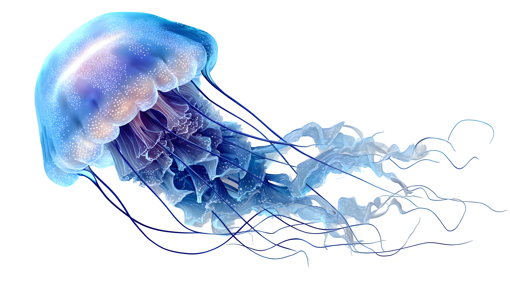
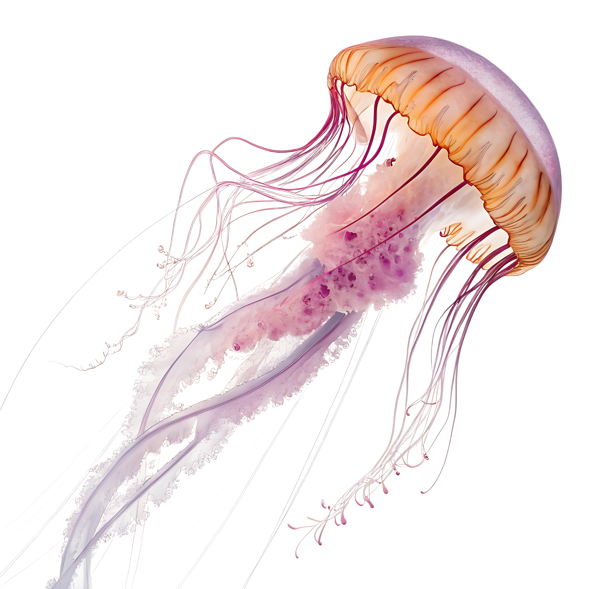

Axolotl


TimeTimeTimeTimeTimeTimeTimeTimeTimeTimeTimeTimeTTimeTimeTimeTimeTimeTimeTimeTimeimeTimeTimeTimeTimeTimeTimeTimeTimeTimeTimeTimeTimeTimeTimeTimeTimeTimeTimeTimeTimeTimeTimeTimeTimeTimeTime
Jellyfish, also known as sea jellies or simply jellies, are the medusa-phase of certain gelatinous members of the subphylum Medusozoa, which is a major part of the phylum Cnidaria. Jellyfish are mainly free-swimming marine animals, although a few are anchored to the seabed by stalks rather than being motile. They are made of an umbrella-shaped main body made of mesoglea, known as the bell, and a collection of trailing tentacles on the underside.
Via pulsating contractions, the bell can provide propulsion for locomotion through open water. The tentacles are armed with stinging cells and may be used to capture prey or to defend against predators. Jellyfish have a complex life cycle, and the medusa is normally the sexual phase, which produces planula larvae. These then disperse widely and enter a sedentary polyp phase which may include asexual budding before reaching sexual maturity.
Jellyfish are found all over the world, from surface waters to the deep sea. Scyphozoans (the "true jellyfish") are exclusively marine, but some hydrozoans with a similar appearance live in fresh water. Large, often colorful, jellyfish are common in coastal zones worldwide. The medusae of most species are fast-growing, and mature within a few months then die soon after breeding, but the polyp stage, attached to the seabed, may be much more long-lived. Jellyfish have been in existence for at least 500 million years,[1] and possibly 700 million years or more, making them the oldest multi-organ animal group.[2]
Jellyfish are eaten by humans in certain cultures. They are considered a delicacy in some Asian countries, where species in the Rhizostomeae order are pressed and salted to remove excess water. Australian researchers have described them as a "perfect food": sustainable and protein-rich but relatively low in food energy.[3]
They are also used in cell and molecular biology research, especially the green fluorescent protein used by some species for bioluminescence. This protein has been adapted as a fluorescent reporter for inserted genes and has had a large impact on fluorescence microscopy.
The stinging cells used by jellyfish to subdue their prey can injure humans. Thousands of swimmers worldwide are stung every year, with effects ranging from mild discomfort to serious injury or even death. When conditions are favourable, jellyfish can form vast swarms, which may damage fishing gear by filling fishing nets, and sometimes clog the cooling systems of power and desalination plants which draw their water from the sea.
Mapping to taxonomic groups
A purple-striped jellyfish at the Monterey Bay Aquarium
Phylogeny
Definition
The term jellyfish broadly corresponds to medusae,[4] that is, a life-cycle stage in the Medusozoa. The American evolutionary biologist Paulyn Cartwright gives the following general definition:
Typically, medusozoan cnidarians have a pelagic, predatory jellyfish stage in their life cycle; staurozoans are the exceptions [as they are stalked].[14]
The Merriam-Webster dictionary defines jellyfish as follows:
A free-swimming marine coelenterate that is the sexually reproducing form of a hydrozoan or scyphozoan and has a nearly transparent saucer-shaped body and extensible marginal tentacles studded with stinging cells.[15]
Given that jellyfish is a common name, its mapping to biological groups is inexact. Some authorities have called the comb jellies[16] and certain salps[16] jellyfish, though other authorities state that neither of these are jellyfish, which they consider should be limited to certain groups within the medusozoa.[17][18]
The non-medusozoan clades called jellyfish by some but not all authorities (both agreeing and disagreeing citations are given in each case) are indicated with "???" on the following cladogram of the animal kingdom:
Animalia
Porifera
Ctenophora (comb jellies)[16] ???[17]
Cnidaria (includes jellyfish and other jellies)
Bilateria
Protostomia
Deuterostomia
Ambulacraria
Chordata
Tunicata (includes salps)[16] ???[18]
Vertebrata
Medusozoan jellyfish
Jellyfish are not a clade, as they include most of the Medusozoa, barring some of the Hydrozoa.[19][20] The medusozoan groups included by authorities are indicated on the following phylogenetic tree by the presence of citations. Names of included jellyfish, in English where possible, are shown in boldface; the presence of a named and cited example indicates that at least that species within its group has been called a jellyfish.
Cnidaria
Anthozoa (corals)
Polypodiozoa and Myxozoa (parasitic cnidarians)
Medusozoa
Acraspeda
Staurozoa (stalked jellyfish)[21]
Rhopaliophora
Cubozoa (box jellyfish)[16]
Scyphozoa
Discomedusae[16]
Coronatae (crown jellyfish)[22]
(true jellyfish[19])
Hydrozoa
Aplanulata
Siphonophorae
Some Leptothecata[16] e.g. crystal jelly
Filifera[16] e.g. red paper lantern jellyfish[23]
Trachylinae
Limnomedusae, e.g. flower hat jelly[16]
Narcomedusae, e.g. cosmic jellyfish[24]
Taxonomy
The subphylum Medusozoa includes all cnidarians with a medusa stage in their life cycle. The basic cycle is egg, planula larva, polyp, medusa, with the medusa being the sexual stage. The polyp stage is sometimes secondarily lost. The subphylum include the major taxa, Scyphozoa (large jellyfish), Cubozoa (box jellyfish) and Hydrozoa (small jellyfish), and excludes Anthozoa (corals and sea anemones).[25] This suggests that the medusa form evolved after the polyps.[26] Medusozoans have tetramerous symmetry, with parts in fours or multiples of four.[25]
The four major classes of medusozoan Cnidaria are:
Scyphozoa are sometimes called true jellyfish, though they are no more truly jellyfish than the others listed here. They have tetra-radial symmetry. Most have tentacles around the outer margin of the bowl-shaped bell, and long, oral arms around the mouth in the center of the subumbrella.[25]
Cubozoa (box jellyfish) have a (rounded) box-shaped bell, and their velarium assists them to swim more quickly. Box jellyfish may be related more closely to scyphozoan jellyfish than either are to the Hydrozoa.[26]
Hydrozoa medusae also have tetra-radial symmetry, nearly always have a velum (diaphragm used in swimming) attached just inside the bell margin, do not have oral arms, but a much smaller central stalk-like structure, the manubrium, with terminal mouth opening, and are distinguished by the absence of cells in the mesoglea. Hydrozoa show great diversity of lifestyle; some species maintain the polyp form for their entire life and do not form medusae at all (such as Hydra, which is hence not considered a jellyfish), and a few are entirely medusal and have no polyp form.[25]
Staurozoa (stalked jellyfish) are characterized by a medusa form that is generally sessile, oriented upside down and with a stalk emerging from the apex of the "calyx" (bell), which attaches to the substrate. At least some Staurozoa also have a polyp form that alternates with the medusoid portion of the life cycle. Until recently, Staurozoa were classified within the Scyphozoa.[25]
There are over 200 species of Scyphozoa, about 50 species of Staurozoa, about 50 species of Cubozoa, and the Hydrozoa includes about 1000–1500 species that produce medusae, but many more species that do not.[27][28]
Fossil history
Fossil jellyfish, Rhizostomites lithographicus, one of the Scypho-medusae, from the Kimmeridgian (late Jurassic, 157 to 152 mya) of Solnhofen, Germany
Stranded scyphozoans on a Cambrian tidal flat at Blackberry Hill, Wisconsin
The conulariid Conularia milwaukeensis from the Middle Devonian of Wisconsin
Since jellyfish have no hard parts, fossils are rare. The oldest unambiguous fossil of a free-swimming medusa is Burgessomedusa from the mid-Cambrian Burgess Shale of Canada, which is likely either a stem group of box jellyfish (Cubozoa) or Acraspeda (the clade including Staurozoa, Cubozoa, and Scyphozoa). Other claimed records from the Cambrian of China and Utah in the United States are uncertain, and possibly represent ctenophores instead.[29]
Anatomy
Labelled cross section of a jellyfish
The main feature of a true jellyfish is the umbrella-shaped bell. This is a hollow structure consisting of a mass of transparent jelly-like matter known as mesoglea, which forms the hydrostatic skeleton of the animal.[25] The mesoglea is 95% or more composed of water,[30] and also contains collagen and other fibrous proteins, as well as wandering amebocytes that can engulf debris and bacteria. The mesoglea is bordered by the epidermis on the outside and the gastrodermis on the inside. The edge of the bell is often divided into rounded lobes known as lappets, which allow the bell to flex. In the gaps or niches between the lappets are dangling rudimentary sense organs known as rhopalia, and the margin of the bell often bears tentacles.[25]
Anatomy of a scyphozoan jellyfish
On the underside of the bell is the manubrium, a stalk-like structure hanging down from the centre, with the mouth, which also functions as the anus, at its tip. There are often four oral arms connected to the manubrium, streaming away into the water below.[31] The mouth opens into the gastrovascular cavity, where digestion takes place and nutrients are absorbed. This is subdivided by four thick septa into a central stomach and four gastric pockets. The four pairs of gonads are attached to the septa, and close to them four septal funnels open to the exterior, perhaps supplying good oxygenation to the gonads. Near the free edges of the septa, gastric filaments extend into the gastric cavity; these are armed with nematocysts and enzyme-producing cells and play a role in subduing and digesting the prey. In some scyphozoans, the gastric cavity is joined to radial canals which branch extensively and may join a marginal ring canal. Cilia in these canals circulate the fluid in a regular direction.[25]
Discharge mechanism of a nematocyst
The box jellyfish is largely similar in structure. It has a squarish, box-like bell. A short pedalium or stalk hangs from each of the four lower corners. One or more long, slender tentacles are attached to each pedalium.[32] The rim of the bell is folded inwards to form a shelf known as a velarium which restricts the bell's aperture and creates a powerful jet when the bell pulsates, allowing box jellyfish to swim faster than true jellyfish. Hydrozoans are also similar, usually with just four tentacles at the edge of the bell, although many hydrozoans are colonial and may not have a free-living medusal stage. In some species, a non-detachable bud known as a gonophore is formed that contains a gonad but is missing many other medusal features such as tentacles and rhopalia. Stalked jellyfish are attached to a solid surface by a basal disk, and resemble a polyp, the oral end of which has partially developed into a medusa with tentacle-bearing lobes and a central manubrium with four-sided mouth.[25]
Most jellyfish do not have specialized systems for osmoregulation, respiration and circulation, and do not have a central nervous system. Nematocysts, which deliver the sting, are located mostly on the tentacles; true jellyfish also have them around the mouth and stomach.[33] Jellyfish do not need a respiratory system because sufficient oxygen diffuses through the epidermis. They have limited control over their movement, but can navigate with the pulsations of the bell-like body; some species are active swimmers most of the time, while others largely drift.[34] The rhopalia contain rudimentary sense organs which are able to detect light, water-borne vibrations, odour and orientation.[25] A loose network of nerves called a "nerve net" is located in the epidermis.[35][36] Although jellyfish are traditionally thought not to have a central nervous system, nerve net concentration and ganglion-like structures could be considered to constitute one in most species.[37] A jellyfish detects stimuli, and transmits impulses both throughout the nerve net and around a circular nerve ring, to other nerve cells. The rhopalial ganglia contain pacemaker neurones which control swimming rate and direction.[25]
In many species of jellyfish, the rhopalia include ocelli, light-sensitive organs able to tell light from dark. These are generally pigment spot ocelli, which have some of their cells pigmented. The rhopalia are suspended on stalks with heavy crystals of calcium carbonate at one end, acting like gyroscopes to orient the eyes skyward. Certain jellyfish look upward at the mangrove canopy while making a daily migration from mangrove swamps into the open lagoon, where they feed, and back again.[2]
Box jellyfish have more advanced vision than the other groups. Each individual has 24 eyes, two of which are capable of seeing colour, and four parallel information processing areas that act in competition,[38] supposedly making them one of the few kinds of animal to have a 360-degree view of its environment.[39]
Box jellyfish eye
The study of jellyfish eye evolution is an intermediary to a better understanding of how visual systems evolved on Earth. Jellyfish exhibit immense variation in visual systems ranging from photoreceptive cell patches seen in simple photoreceptive systems to more derived complex eyes seen in box jellyfish.[40] Major topics of jellyfish visual system research (with an emphasis on box jellyfish) include: the evolution of jellyfish vision from simple to complex visual systems), the eye morphology and molecular structures of box jellyfish (including comparisons to vertebrate eyes), and various uses of vision including task-guided behaviors and niche specialization.